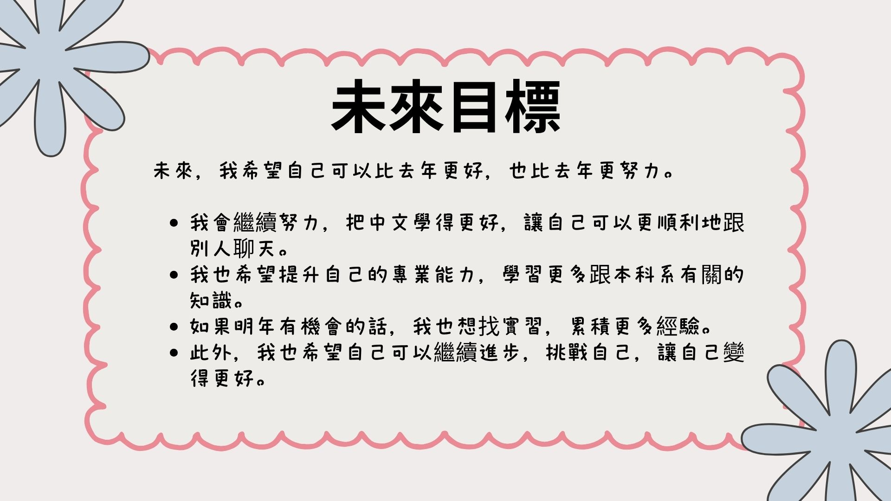

未來，我希望自己可以比去年更好，也比去年更努力。
我會繼續努力，把中文學得更好，讓自己可以更順利地跟別人聊天。
我也希望提升自己的專業能力，學習更多跟本科系有關的知識。
如果明年有機會的話，我也想找實習，累積更多經驗。
此外，我也希望自己可以繼續進步，挑戰自己，讓自己變得更好。
In the future, I hope I can do better than last year and work even harder.
I will continue to improve my Chinese so that I can communicate more smoothly with others.
I also hope to enhance my professional skills and learn more knowledge related to my major.
If I have the opportunity next year, I would also like to find an internship to gain more experience.
In addition, I hope I can keep improving, challenge myself, and become a better person.
| Chinese (中文) | English (英文) |
|---|---|
| 未來，我希望自己可以比去年更好 | In the future, I hope I can do better than last year |
| 也比去年更努力 | Also work even harder |
| 我會繼續努力，把中文學得更好 | I will continue to improve my Chinese |
| 讓自己可以更順利地跟別人聊天 | So that I can communicate more smoothly with others |
| 我也希望提升自己的專業能力 | I also hope to enhance my professional skills |
| 學習更多跟本科系有關的知識 | Learn more knowledge related to my major |
| 如果明年有機會的話 | If I have the opportunity next year |
| 我也想找實習，累積更多經驗 | I would also like to find an internship to gain more experience |
| 此外，我也希望自己可以繼續進步 | In addition, I hope I can keep improving |
| 挑戰自己，讓自己變得更好 | Challenge myself, and become a better person |
Vocabulary List(生詞表)
| Chinese Character (漢字) | Pinyin (拼音) | English (英文) |
|---|---|---|
| 未來 | wèilái | Future |
| 希望 | xīwàng | Hope |
| 自己 | zìjǐ | Myself / Self |
| 可以 | kěyǐ | Can / May / Be able to |
| 比 | bǐ | Than / (Used for comparison) |
| 去年 | qùnián | Last year |
| 更 | gèng | More / Even more |
| 努力 | nǔlì | Hardworking / To make an effort |
| 繼續 | jìxù | Continue |
| 順利 | shùnlì | Smoothly / Without a hitch |
| 聊天 | liáotiān | To chat |
| 提升 | tíshēng | Improve / Elevate |
| 專業 | zhuānyè | Professional / Major |
| 能力 | nénglì | Ability / Capability |
| 科系 | kēxì | Academic department / Major |
| 有關 | yǒuguān | Related to / Concerning |
| 知識 | zhīshì | Knowledge |
| 如果 | rúguǒ | If |
| 明年 | míngnián | Next year |
| 機會 | jīhuì | Opportunity / Chance |
| 實習 | shíxí | Internship / To intern |
| 累積 | lěijī | Accumulate |
| 經驗 | jīngyàn | Experience |
| 此外 | cǐwài | In addition / Besides |
| 進步 | jìnbù | Progress / Improvement |
| 挑戰 | tiǎozhàn | Challenge |
| 變 | biàn | Become |